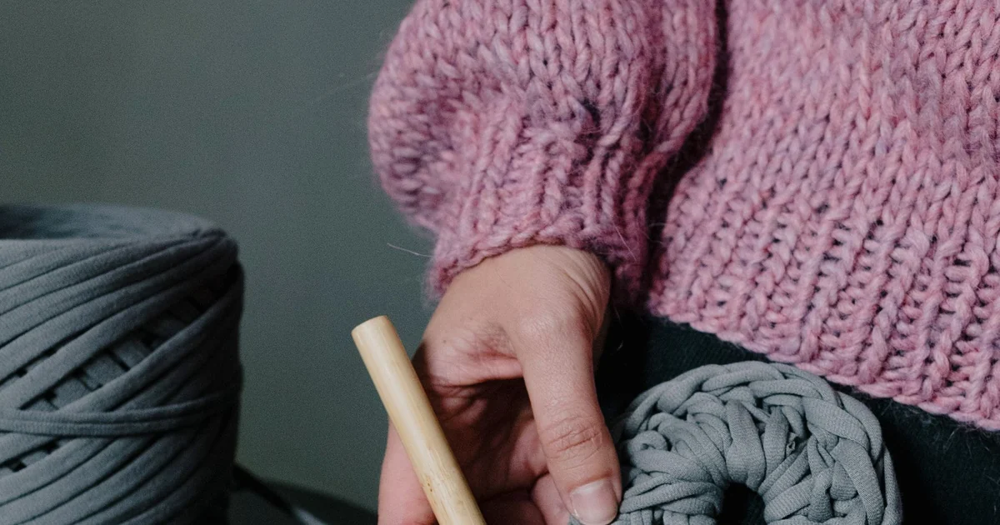

Tools, Yarn & Materials · Beginner guide
What Crochet Hook Size Should a Beginner Use?
Choose a hook by starting with the pattern recommendation, then compare a swatch with the stated gauge.

A hook number alone does not determine fabric size. Hook, tension, yarn, and stitch pattern all affect the result; gauge is more useful for sized work.
Before you begin
Check both metric size and letter or number on the hook. Letter sizing can vary by brand, so millimeters help identify the actual hook.
Step-by-step instructions
- Read the pattern’s yarn and hook recommendation before buying or substituting tools.
- Make a gauge swatch in the pattern stitch using the stated hook; measure away from the edge.
- If you have too many stitches in the stated width, try a larger hook. If too few, try a smaller one.
- Recheck the swatch and choose a hook that meets gauge and creates suitable fabric.
What to check
Gauge beats the label suggestion
For a practice square, exact gauge may not matter. For garments or projects with target dimensions, a hook change can alter size and fabric feel.
Frequently asked questions
What hook size should a beginner buy?
There is no single best size. Start with the hook listed in your pattern and the yarn you plan to use.
What if the recommended hook feels uncomfortable?
Try another handle or style, then check the resulting gauge and fabric before using it for sized work.
Can two hooks with the same millimeter size feel different?
Yes. Handle shape, material, and hook-head design vary. If both have the same measured size, compare comfort and make a gauge swatch before choosing for a project with set dimensions.
Read the metric size as well as the label
A letter or number is a maker’s size label, and systems can vary. The millimeter measurement gives a direct size comparison, though worn or older hooks may not match their printed marking exactly. If you are following a pattern, start with its stated hook size and check that the size on your tool is the same. A comfortable grip matters for practice, but changing the hook for comfort can change the gauge. For a sized project, make a swatch with the hook you plan to use.
Change hook size only after checking the swatch
If your swatch has more stitches in the measured width than the pattern, your stitches are smaller; a larger hook may help. If it has fewer, a smaller hook may help. Work a new swatch after changing size because gauge also depends on tension and yarn. The fabric should be appropriate for the project, not only match the stitch number. A loose fabric can meet one measurement but still lack the structure the pattern needs.
Consider hook shape and handle separately
A hook’s size is not its only feature. The head, throat, shaft, and handle shape can feel different in the hand even when two hooks have the same millimeter measurement. Some crocheters prefer an inline head; others find a tapered head easier to move through loops. These preferences are personal, and neither design determines the correct gauge by itself. If a hook feels uncomfortable, try another handle or head style at the same size, then compare a small swatch. This helps separate comfort from stitch-size changes.
Keep tension and hook size distinct
A hook size sets the space available for loops, but it does not set tension for you. Two people can use the same hook and yarn and still produce different gauge. If your swatch differs, first check that you worked the same stitch pattern and measured the same area as the instructions. Then try a hook one size at a time and remake the swatch. Do not use a smaller or larger hook simply because another maker uses it; select one that gives the fabric and dimensions the pattern calls for.
Common mistakes and how to fix them
- Choosing by letter without checking millimeters. Letter labels can differ. Compare the actual metric size with the pattern.
- Changing hooks before making the specified swatch. Gauge reflects the real yarn, stitch, and hook together. Check the swatch before deciding.
- Using one hook size for every yarn. A hook that suits one yarn may not suit another. Start with pattern or label guidance.
Tips that make it easier
- Use the hook named by the pattern as your starting point, not a universal beginner size.
- Compare the metric marking when replacing a hook or matching a set.
- Keep the swatch relaxed and measure away from its edges.
A useful next step
Check the pattern and label together, then use a sample to confirm how the materials behave before starting the full project.